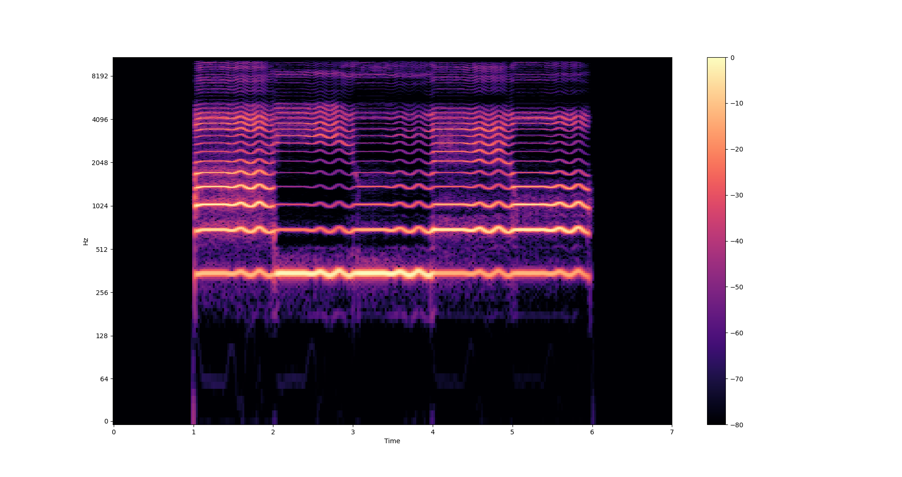
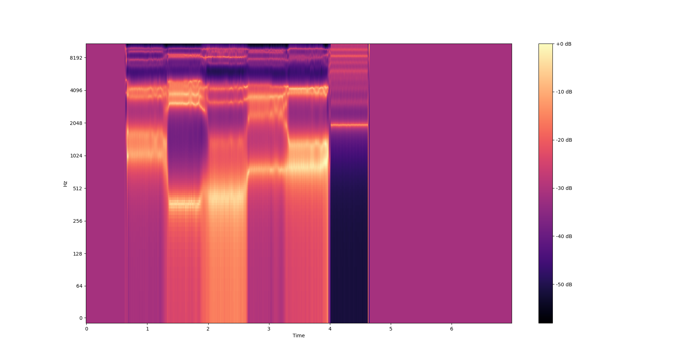
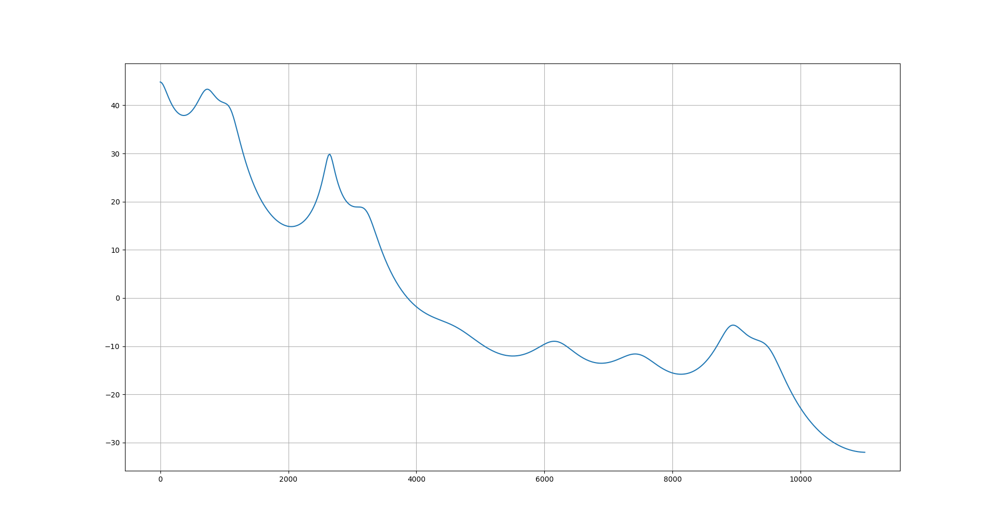
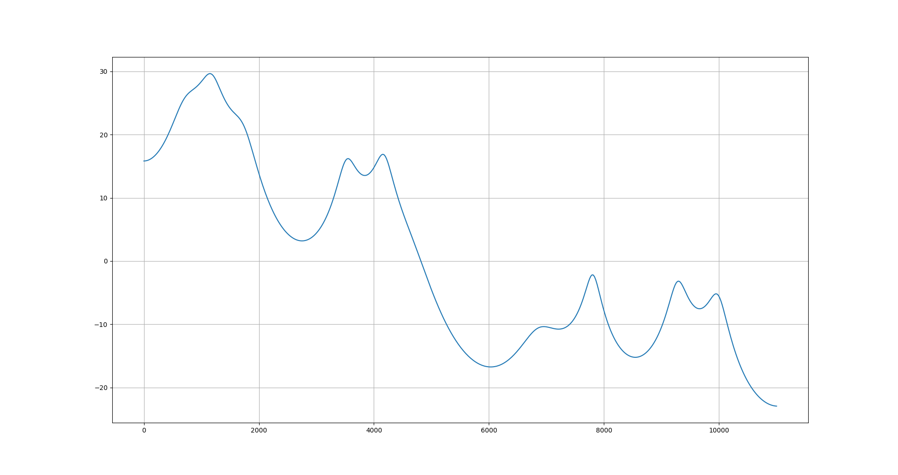

フォルマント解析
フォルマント解析，やってみたいよな
フォルマント
人間の音声は声帯の振動で生成され，声道を通って発せられる． このとき，声道の周波数特性によって，特定の周波数が強調される． この強調された周波数をフォルマント周波数といい， 低いものから順番に第一フォルマント，第二フォルマント・・・という
下図は IA に「あいうえお」ってしゃべらせたときの波形

これはただの stft なのでフォルマントではなく基本周波数とその高調波のはずで，これを LPC 解析とかして
包絡線を求めることでどの周波数が強調されているかを知ることができる，という認識
原理は全くわかってないけどとりあえずやってみる
librosa 初めてちゃんと調べたけど便利だ

あんまり正確じゃない気がするけどまあいいか
それっぽい周波数にそれっぽいピークがでているのでまあ．．．
formants.py
LPC 解析
音の複雑な形を線形の式で予測してしまおうというこころみ
時刻 n における信号を x_n と表すと，線形予測の結果は以下のようになる
$$ \overline{x_n} = -(\alpha_1 x_{n-1} + \alpha_2 x_{n-2} + … + \alpha_p x_{n-p}) $$
真の値との誤差を計算すると以下のようになる．
$$ \epsilon_n = x_n - \overline{x_n} = x_n + \alpha_1 x_{n-1} + \alpha_2 x_{n-2} + … + \alpha_p x_{n-p}$$
このときに誤差をなるべく小さくするようにパラメータを決めてあげる必要がある．
α (線形予測係数)をうまく選んであげればいい，みたいな感じ
さっきの式から以下のように畳み込みを表せる．
$$\overline{x_n} = x_n - \epsilon_n = - \alpha_n * x_n$$
Z変換を使うと以下のようになる(仮にB(z)をおく)
$$\overline{X}(z) = B(z)X(z)$$
すると予測誤差は
$$E(z) = X(z) - \overline{X}(z) = X(z)(1-B(z))$$
であれば伝達関数を A(z) とおいて，以下のように表すことができる．
$$X(z) = \frac{E(z)}{A(z)} = \frac{E(z)}{1+\Sigma^p_{i=1}\alpha_iz^{-1}}$$
話を戻して，もいっかい誤差の式を書くと以下のようになる
$$ \epsilon_n = \Sigma^p_{i=0}\alpha_ix_{t-i} $$
このとき誤差を最小にしたい，というのは最小二乗推定を使う． つまり，誤差を最小にする α に対してそれぞれ偏微分した値を 0 とおいて，連立方程式を解く．(なんか数式解決できなくなってるけど気が向いたら直す)
$$\beta = \Sigma^{t_1}{t=t_0} \epsilon^2_t = \Sigma^p{i=0}\Sigma^p_{j=0}\alpha_i\alpha_jx_t-ix_t-j $$
ここで c を以下のように定義する．
$$ c_{ij} = \Sigma^{t_i}_{t=t_0} x_t-i x_t-j $$
すると二条誤差は以下のようになる
$$\beta = \Sigma^p_{i=0}\Sigma^p_{i=0} \alpha_i c_{ij} \alpha_j$$
これを αj に対して偏微分して，0 とおいたときの連立方程式を解けばいい．
$$ c_{ij} = \Sigma^\infty_{t=-\infty} x_{t-i} x_{t-j} $$
このとき実際は t<0, N<=t で xt = 0 とする．すると以下のようになる
$$ c_{ij} = \Sigma^{N-1-|i-j|}_{t=0}x_t x_t+|i-j|$$
自己相関関数を用いて以下のように使う
$$r_\tau = \frac{1}{N}\Sigma^{N-1-|i-j|}_{t=0}x_t x_t+|i-j|$$
$$c_{ij} = Nr_{|i-j|}$$
すると，偏微分 = 0 を使って，以下のようになる(係数は省略できる)
$$\Sigma^p_{i=0}\alpha_tr_{|i-j|} = 0$$
$$\Sigma^p_{i=1}\alpha_tr_{|i-j|} = - r_t$$
これを解けば，連立方程式を計算することで線形予測係数を求めることができる．
というかんじになる． この正規方程式を解ければ α が知れる． 以下から実際にスクリプトを書いて試してみる． (以下から先の行列式を Ra=r というふうに書く．)
LPC 解析ことはじめ
自己相関関数を計算してみると以下のようになる． (自分の実装と numpy の correlate)
|
|
R と r を以下のように計算する
|
|
numpy の lonalg.solve で連立方程式を解くと以下のようになる
|
|
でもこれは明らかに p が大きくなると計算が重くなるので，計算量を改善する必要がある
Levinson-Durbin 法
p が多いと，普通に連立方程式を立ててしまうと計算が大変になるので工夫する必要がある． ここで，再帰的に計算する方法を用いる． つまり，サイズ p における解をもとに p+1 の解を求める．
最後の式をもっかい書く
ここで以下のようにおく
$$E_p = \Sigma^p_{i=0}\alpha_ir(i)$$
また，サイズ p における線形予測係数行列を A_p, 自己相関係数行列を R_p とおく．つまり以下のようになる．
この A_p に対して一番下に 0 を新しく追加したものを A’_p+1 とする．ただし，これは知りたい線形予測係数ではないので A’ としている．
これは以下のように変換できる
このときに A’ の上下を逆にしても，右辺の上下を逆にしても成立するようにするには，自己相関係数行列を上下左右に反転させればいい．これを B_p+1 とすると以下のようになる．
このとき，知りたい A_{p+1} を以下のように表す． ただし，k_p+1 を PARCOR 係数と呼ぶらしい
$$A_{p+1} = A’{p+1} + k{p+1}B_{p+1}$$
とすると，以下のようになる．
このとき，一番下が 0 になって，一番上が E_p+1 になるように PARCOR を求める．
$$\Sigma^p_{i=0} \alpha_ir_{p+1-i} + k_{p+1}E_p = 0$$
$$ k_{p+1} = \frac{\Sigma^p_{i=0} \alpha_ir_{p+1-i}}{E_p}$$
$$E_{p+1} = E_p + k_{p+1}\Sigma^p_{i=0} \alpha_ir_{p+1-i} = E_p - k_{p+1}^2E_p$$
で．既知の値しかないので k が求まって，次の k を求めるのに使う E ももとまるってワケ
Levinson-Durbin 法 実装
|
|
今回使った音声ファイルは自分で「ああああ」と言った wav ファイルで，サンプリングレートは 22050 Hz ． なので計算できる周波数は 11025 Hz あたりまでで，男声なら第 10 フォルマントぐらいまで入る(はず)．
|
|
これだけだと何がなんだか分からないので伝達関数に置き換えると以下のようになる. (scipy の freqz の存在を初めて知った．公式ドキュメントに従う) 返り値の h が周波数特性で，w が h に対する周波数．w は[0, pi) に正規化されているらしい．
|
|
でこんな感じ

800 Hz, 1200 Hz, 2500 Hz あたりにピークっぽいのが見えているのでそれっぽい
ちなみに IA だとこんな感じ

なんかあまりうまくいってない気がするが，ボーカロイドなのと， ボカロエディタでフォルマントを相対的に操作できる機能があるんだがそれが邪魔しているかもしれない (前に曲作った時の履歴が残っている)
LPC で何がしたかったか
LPC は声道を伝達関数とみなして，伝達関数の線形予測係数を計算する方法．
このとき求まる係数によって声道の共振特性が変化する．
この共振特性が分かるとスペクトルのピーク(フォルマント)を決定することができる．
先の計算で使った p は，これが大きいほど過去までさかのぼって予測を行うことになる．